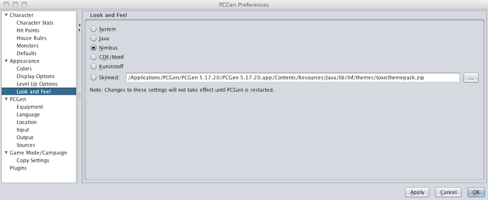

The Appearance Preferences allows the user to change the usability and appearance of PCGen.
The Color settings allow the user to change the default colors used by PCGen for the following:

The Display settings allow the user to configure "Outputname" and "Description" display for various LST objects. It also allows the user to set whether PCGen's "Tooltips" are displayed. Finally, thes setting allow the user to control the level of detail provided on the "Skills Tab".

The Level Up settings allow the user to the appearance of the "Stat Dialog" at level-up and the "Ability Warning" for each new character.

The Look and Feel setting allows the user to control the general "Look-and-Feel" for PCGen.